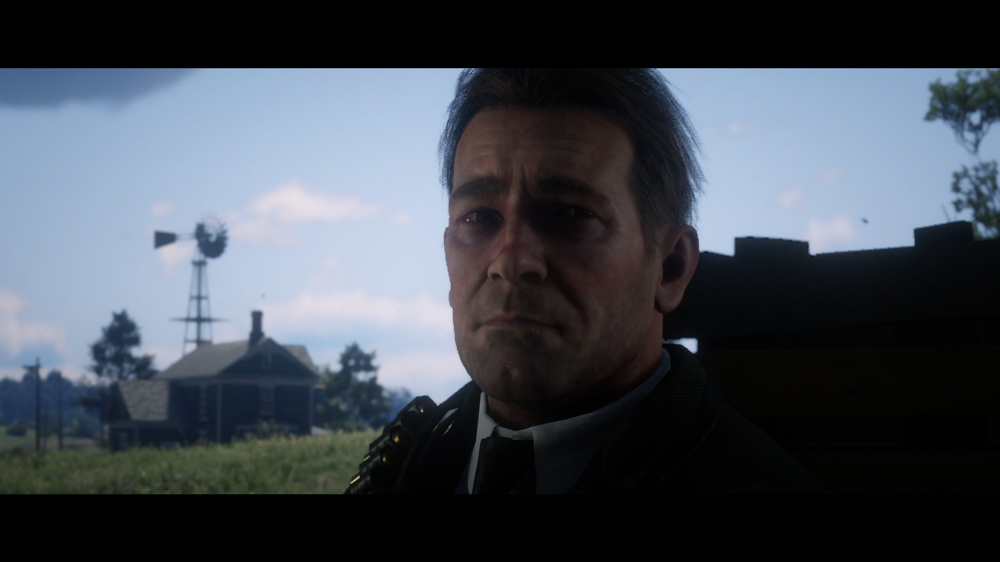
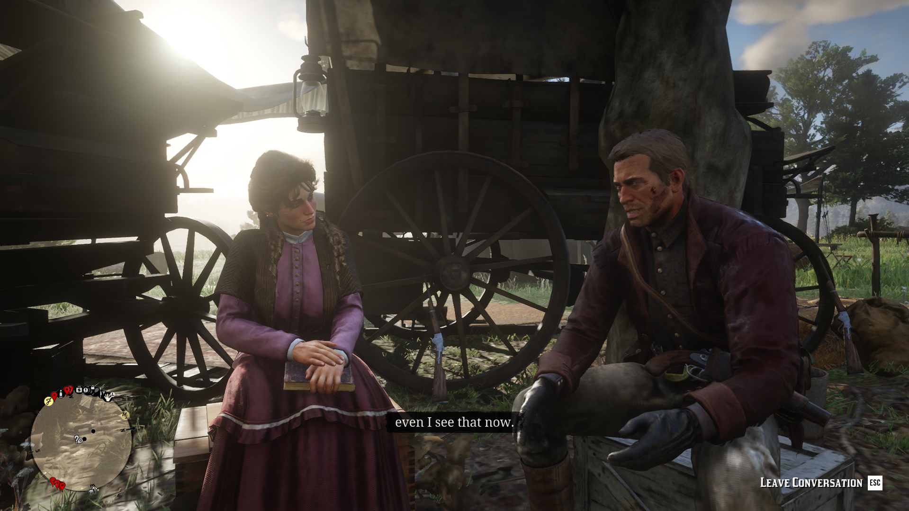
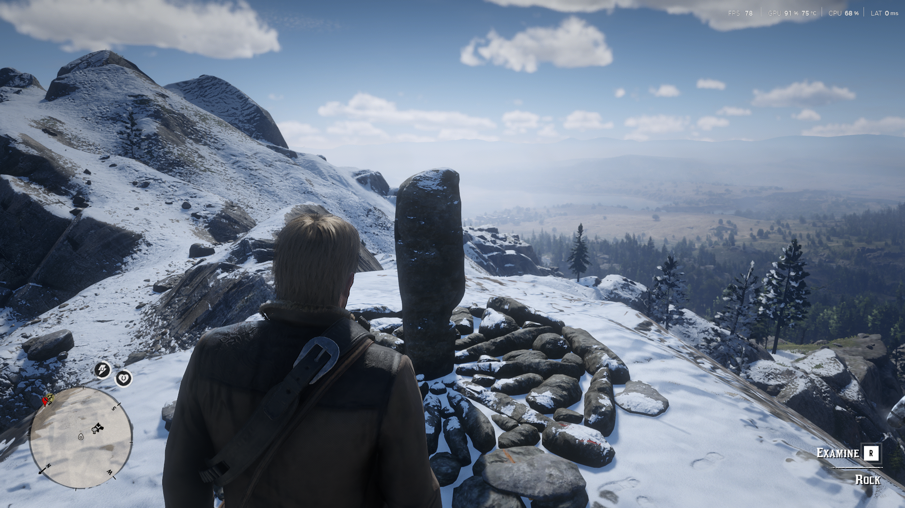
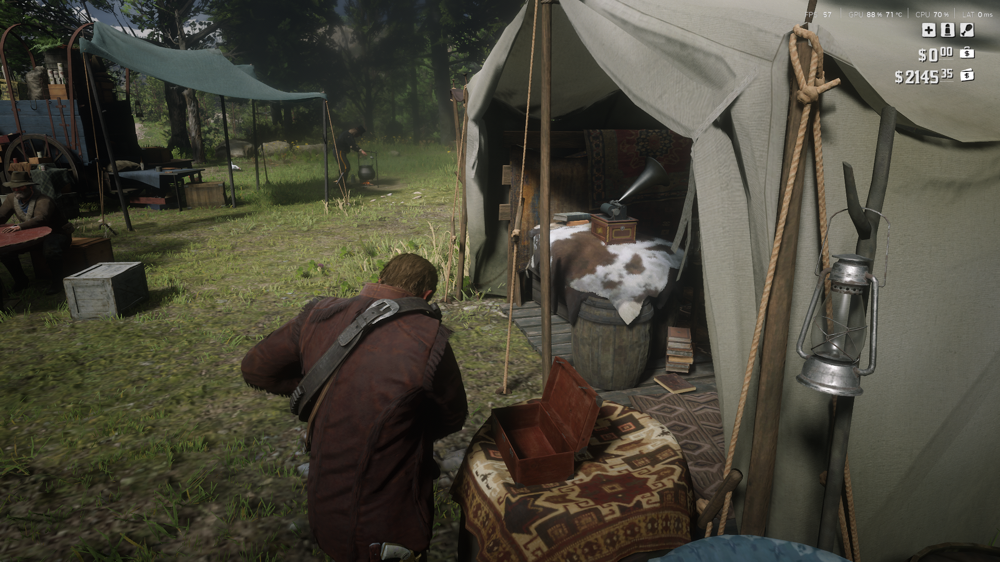
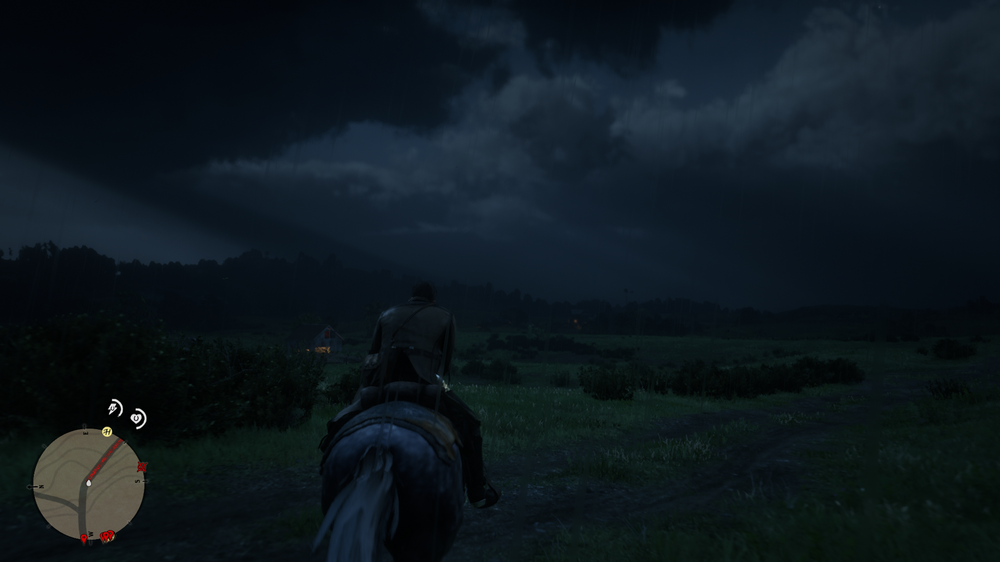

Red Dead Redemption 2
Tragedi, loyalitas, dan penebusan di penghujung era Wild West melalui perjalanan Arthur Morgan bersama geng Van der Linde.

Red Dead Redemption 2 bukan sekadar game open-world biasa; ini adalah sebuah karya narrative design yang kuat. Melalui perjalanan Arthur Morgan dan geng Van der Linde, Rockstar menghadirkan kisah tragedi, loyalitas, dan penebusan di penghujung era Wild West. Kekuatan game ini tidak hanya terletak pada luasnya dunia, tetapi juga pada cara karakter dan lingkungan membangun pengalaman yang terasa hidup.
01. Presentasi dan Penceritaan

Red Dead Redemption 2 menyajikan cerita dengan pendekatan sinematik yang tetap memberi ruang bagi pemain untuk mengendalikan Arthur di tengah banyak adegan penting. Peralihan antara cutscene dan gameplay membantu menjaga kesinambungan cerita, meskipun beberapa misi masih memiliki batasan yang cukup ketat terhadap tindakan pemain.
Cerita juga tidak hanya disampaikan melalui dialog utama. Interaksi di camp, percakapan spontan antaranggotanya, dan perubahan hubungan di dalam geng memberi gambaran tentang kehidupan mereka di luar misi. Karakter pendukung tidak sekadar menjadi pelengkap, tetapi turut membentuk suasana dan konflik dalam kelompok.
Dari sudut pandang narrative design, detail seperti ini membuat dunia terasa memiliki kehidupan tersendiri. Pemain dapat memahami dinamika geng melalui aktivitas sehari-hari, bukan hanya lewat penjelasan langsung dalam cutscene.
02. Grafis dan Detail Lingkungan

Salah satu aspek paling menonjol dari Red Dead Redemption 2 adalah perhatian terhadap detail visual. Perubahan cuaca, pencahayaan yang menembus pepohonan, kondisi permukaan tanah, dan perbedaan karakteristik setiap wilayah membantu membangun suasana dunia yang meyakinkan.
Lingkungan tidak terasa hanya sebagai latar untuk menjalankan misi. Lumpur, salju, hutan, pegunungan, dan permukiman memiliki karakter visual tersendiri. Detail animasi karakter dan kuda juga memperkuat kesan bahwa objek di dunia game memiliki bobot dan respons terhadap lingkungan.
Pendekatan visual yang realistis ini mendukung imersi, khususnya ketika pemain menjelajahi dunia tanpa terburu-buru menyelesaikan misi utama. Kekuatannya justru terlihat dari banyaknya detail kecil yang tidak selalu harus diperhatikan untuk menyelesaikan permainan.
03. Audio dan Musik

Desain audio membantu membuat dunia Red Dead Redemption 2 terasa hidup. Suara binatang, angin, langkah kaki, aktivitas di camp, dan berbagai bunyi lingkungan memberikan informasi sekaligus memperkuat suasana tanpa harus selalu mengandalkan dialog atau musik.
Performa voice acting juga menjadi fondasi penting dalam penyampaian cerita. Penampilan Roger Clark sebagai Arthur Morgan membantu menampilkan sisi keras, humor, keraguan, dan kerentanan karakter tersebut secara bertahap. Emosi karakter terasa lebih meyakinkan karena berkembang bersama kejadian yang dialaminya.
Musik digunakan untuk memperkuat momen tertentu, bukan sekadar mengisi setiap perjalanan. Lagu seperti "Unshaken" menjadi contoh bagaimana musik dapat bekerja bersama konteks cerita dan perjalanan Arthur untuk meninggalkan kesan emosional yang lebih kuat.
04. Gameplay dan Imersi

Mekanik Dead Eye memberi identitas tersendiri pada pertempuran dengan memungkinkan pemain memperlambat waktu dan menandai target. Gunplay terasa cocok dengan fantasi menjadi seorang penembak di era Wild West, sementara pilihan senjata dan situasi pertempuran dapat memengaruhi cara pemain menghadapi musuh.
Berbagai aktivitas seperti berburu, mengelola perlengkapan, merawat kuda, dan menjaga kondisi Arthur mendukung gagasan bahwa bertahan hidup merupakan bagian dari perjalanan. Sistem-sistem tersebut membuat dunia terasa lebih interaktif, meskipun tidak semua pemain akan menikmati setiap aktivitas tambahan.
Di sisi lain, keinginan menjaga realisme kadang membuat tempo permainan terasa lambat. Animasi looting, beberapa interaksi kontekstual, dan struktur misi yang membatasi pendekatan alternatif bisa mengurangi keluwesan pemain. Hal ini memperlihatkan kompromi desain antara imersi dan kebebasan bermain.
Bagi pemain yang menikmati perjalanan santai dan detail dunia, tempo tersebut dapat menjadi bagian dari daya tariknya. Namun, pemain yang mengutamakan aksi cepat mungkin akan merasa beberapa aktivitas berjalan terlalu panjang.
The Verdict
"Standar emas untuk penceritaan dalam video game dan desain dunia terbuka. Red Dead Redemption 2 adalah pengalaman yang menuntut kesabaran, tetapi membayarnya dengan dunia yang kaya akan detail, karakter yang berkembang, dan kisah penebusan yang meninggalkan kesan mendalam. Meski temponya tidak selalu cocok untuk semua pemain, keseluruhan pengalaman menjadikannya salah satu game yang sangat berkesan."
Skor dan kesimpulan merupakan penilaian pribadi penulis.